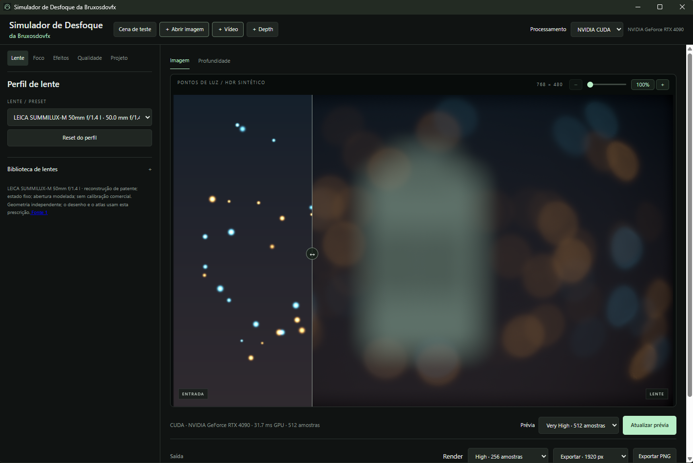
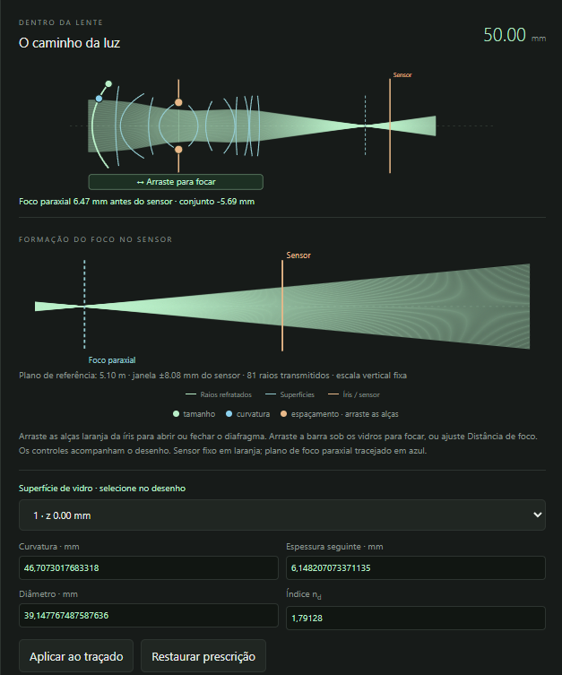
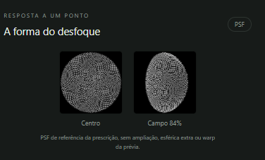

Energy, not averaging
A bright light stays bright after defocus. The lens redistributes its energy into a disc; a Gaussian averages already-clipped pixels and kills the glow.
Optical simulator · per-surface ray tracing
Light enters through the first glass, refracts at every surface, gets clipped by the aperture and reaches the sensor. The bokeh in your image is born from that path — not from a blur filter.
01 — Before & after
A Gaussian blur spreads pixels that are already recorded. A lens spreads light. Drag the divider and compare the same scene — the optical side was computed live, on this page, by tracing rays through a Double-Gauss 50 mm.
A bright light stays bright after defocus. The lens redistributes its energy into a disc; a Gaussian averages already-clipped pixels and kills the glow.
The aperture blades draw the bokeh. Stop down and the circle becomes a heptagon; round the blades and it turns circular again.
Off-axis, the beam is clipped by the front and rear glass. The disc becomes a cat's eye pointing to the center of the frame.
With spherical aberration, blur in front of and behind the focus plane differs: a bright ring on one side, a soft center on the other.
Each glass has its own index and dispersion. Red, green and blue focus at different places and create fringes on the disc edges.
With RGB + depth, each plane gets the blur of its own distance and the foreground covers the discs behind it — with no halo of the subject's color.
02 — App renders
Real output from the simulator. Drag each divider.
03 — Live lab
This is a lightweight version of the engine running in your browser. Drag a glass element to move it, the blue handles to change curvature and the orange ones to open or close the aperture. The bar under the lens focuses. The bokeh on the right is recomputed on every move.
Real 3D ray tracing (vector Snell, spherical surfaces, diameter clipping and polygonal iris) with Abbe-based dispersion at three wavelengths. Simplified for the web: no Fresnel, coatings, ghosts, diffraction or depth. The full app traces on Vulkan/CUDA with up to 1024 samples per pixel.
04 — The app
Pick a lens, open an image, video or depth map and see the preview on the GPU. Edit the prescription, follow the light path and the blur shape at the center and across the field.



05 — Library
Double-Gauss, Sonnar, Tessar, Petzval, triplets, anamorphics and retrofocus. Each profile changes the optical model, focal length, glass size, maximum aperture and iris.
| Lens | Focal | Aperture | Family | Blades | Character |
|---|
06 — Engine
07 — Platforms
The same optical engine and the same library in the app and the plugins.
Upcoming integrations of the same optical engine: